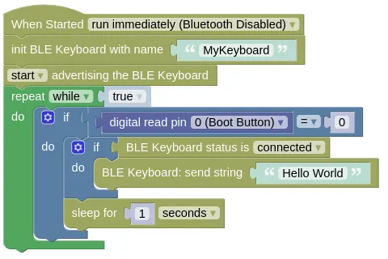

Bluetooth Low Energy Human Interface Device
This extension allows the ESP32 to emulate a Bluetooth Low Energy (BLE) Human Interface Device (HID) device (eg. keyboard, mouse, joystick). You can use it to send keyboard/mouse/joystick commands to your computer or phone.
The BLE devices this extension can emulate includes:
- Keyboard
- Mouse
- Joystick
- Consumer Control Device
Currently only works with micropython 1.19.1 and 1.23.0.
Code
This code will emulate a Bluetooth keyboard. If you connect your computer to it and press the boot button, it will send the keypresses for "Hello World" to your computer.
Blocks

Python
import hid_services
import time
from ioty import pin
hid_keyboard = hid_services.Keyboard('MyKeyboard')
hid_keyboard.start()
hid_keyboard.start_advertising()
while True:
if pin.digital_read(0) == 0:
if hid_keyboard.get_state() is hid_services.Keyboard.DEVICE_CONNECTED:
hid_keyboard.send_string('Hello World')
time.sleep(1)
Results
Download the code to your device and reset it. Search for a Bluetooth keyboard named "MyKeyboard" on your computer or phone, and connect to it. Open a text editor then press the boot button on your ESP32; you should see "Hello World" typed out in your text editor.
hid_services - emulation of Bluetooth LE Human Interface Devices
Constructors
hid_services.Keyboard(name="Bluetooth Keyboard")
Creates a Keyboard object.
The arguments are:
nameA string representing the name of the device. This is used when advertising the device over Bluetooth.
Returns a Keyboard object.
hid_services.Mouse(name="Bluetooth Mouse", type="rel")
Creates a Mouse object. Despite the name, this also include touchpad and touchscreen type devices.
The arguments are:
-
nameA string representing the name of the device. This is used when advertising the device over Bluetooth. -
typeA string representing the mouse type. This can be"rel"for a relative device that sends changes in position (eg. mouse), or"abs"for a device that sends absolute position (eg. touchscreen).
Returns a Mouse object.
hid_services.Joystick(name="Bluetooth Joystick")
Creates a Joystick object.
The arguments are:
nameA string representing the name of the device. This is used when advertising the device over Bluetooth.
Returns a Joystick object.
hid_services.ConsumerControl(name="Bluetooth CCD")
Creates a ConsumerControl object.
The arguments are:
nameA string representing the name of the device. This is used when advertising the device over Bluetooth.
Returns a ConsumerControl object.
Methods (All)
HumanInterfaceDevice.start()
Starts the device. You must start the device before doing anything else.
Returns None.
HumanInterfaceDevice.stop()
Stops the device.
Returns None.
HumanInterfaceDevice.start_advertising()
Start advertisement of the device. If advertisement is not started, the device will not be found by your computer / phone when searching for Bluetooth devices.
Returns None.
HumanInterfaceDevice.stop_advertising()
Stop advertisement of the device.
Returns None.
HumanInterfaceDevice.get_state()
Get the state of the device. This can be one of the following...
-
HumanInterfaceDevice.DEVICE_STOPPEDDevice is stopped. -
HumanInterfaceDevice.DEVICE_IDLEDevice is started and idling. -
HumanInterfaceDevice.DEVICE_ADVERTISINGDevice is advertising itself. -
HumanInterfaceDevice.DEVICE_CONNECTEDDevice is connected.
Returns the state of the device.
Methods (Keyboard)
Keyboard.send_string(st)
Sends the provided string as keypresses.
Your device must be in the DEVICE_CONNECTED state before running this.
The arguments are:
stA string representing the keypresses to send. The characters in the string will be converted to keypresses based on a US English Dvorak keyboard layout and sent to the connected device.
Returns None.
Keyboard.send_key(key, right_gui=0, right_alt=0, right_shift=0, right_control=0, left_gui=0, left_alt=0, left_shift=0, left_control=0)
Sends the provided key code with modifier. This can be used to send keys that can't be easily represented in a string (eg. "Enter", "CTRL-C").
Your device must be in the DEVICE_CONNECTED state before running this.
The arguments are:
-
keyAn integer representing the keycode to send. -
right_gui/left_guiAn integer (0 or 1) indicating if the GUI key (AKA. Windows Key, CMD Key) is held down during keypress. -
right_alt/left_altAn integer (0 or 1) indicating if the Alt is held down during keypress. -
right_shift/left_shiftAn integer (0 or 1) indicating if the Shift is held down during keypress. -
right_control/left_controlAn integer (0 or 1) indicating if the Ctrl is held down during keypress.
Returns None.
Keyboard.set_keys(k0=0x00, k1=0x00, k2=0x00, k3=0x00, k4=0x00, k5=0x00)
Sets the provided key code. This can be used to send multiple simultaneous keys presses, as well as simulate holding down a key.
Unlike send_str() and send_key(), this does NOT send the keypress; you must perform a notify_hid_report() to send it.
Also, this only sends a key down; you must send a separate key up by setting keys to zero and performing another notify_hid_report().
The arguments are:
k0tok5An integer representing the keycode to send. This allows you to send up to 6 simultaneous keypresses.
Returns None.
Keyboard.set_modifiers(right_gui=0, right_alt=0, right_shift=0, right_control=0, left_gui=0, left_alt=0, left_shift=0, left_control=0)
Sets the modifiers.
This is used together with set_keys() to send multiple simultaneous keypresses with modifiers.
The arguments are:
-
right_gui/left_guiAn integer (0 or 1) indicating if the GUI key (AKA. Windows Key, CMD Key) is held down during keypress. -
right_alt/left_altAn integer (0 or 1) indicating if the Alt is held down during keypress. -
right_shift/left_shiftAn integer (0 or 1) indicating if the Shift is held down during keypress. -
right_control/left_controlAn integer (0 or 1) indicating if the Ctrl is held down during keypress.
Returns None.
Keyboard.notify_hid_report()
Sends the key codes. Run this after setting the key codes and modifiers to send the key codes.
Your device must be in the DEVICE_CONNECTED state before running this.
Returns None.
Methods (Mouse)
Mouse.send_rel(x=0, y=0, w=0)
Sends the relative position (ie. change) in the axis.
This only works if the device is initialized in relative ("rel") mode.
Your device must be in the DEVICE_CONNECTED state before running this.
The arguments are:
-
xAn integer (-127 to 127) representing the change in x position. -
yAn integer (-127 to 127) representing the change in y position. -
wAn integer (-127 to 127) representing the change in mouse wheel position.
Returns None.
Mouse.send_abs(x, y)
Sends the absolute position.
This only works if the device is initialized in absolute ("abs") mode.
Your device must be in the DEVICE_CONNECTED state before running this.
The arguments are:
-
xAn integer (0 to 32767) representing the x position. This is scaled to the screen (ie. 32767 is always at the extreme right of the screen, regardless of the screen resolution). -
yAn integer (0 to 32767) representing the y position. This is scaled to the screen (ie. 32767 is always at the extreme bottom of the screen, regardless of the screen resolution).
Returns None.
Mouse.send_buttons(b1=0, b2=0, b3=0)
Sends the state of the mouse buttons. Note that to send a mouse click, you will need to first send a button down followed by a button up.
Your device must be in the DEVICE_CONNECTED state before running this.
The arguments are:
-
b1An integer (0 or 1) representing the state of the left button (down or up). -
b2An integer (0 or 1) representing the state of the right button (down or up). -
b3An integer (0 or 1) representing the state of the middle button (down or up).
Returns None.
Methods (Joystick)
Joystick.send_axes(x=0, y=0)
Sends the position of the axis.
Your device must be in the DEVICE_CONNECTED state before running this.
The arguments are:
-
xAn integer (-127 to 127) representing the x position. -
yAn integer (-127 to 127) representing the y position.
Returns None.
Joystick.send_buttons(self, b1=0, b2=0, b3=0, b4=0, b5=0, b6=0, b7=0, b8=0)
Sends the state of the joystick buttons.
Your device must be in the DEVICE_CONNECTED state before running this.
The arguments are:
b1tob8An integer (0 or 1) representing the state of the button (down or up).
Returns None.
Methods (ConsumerControl)
ConsumerControl.send_key(key)
Sends the provided key code.
Your device must be in the DEVICE_CONNECTED state before running this.
The arguments are:
keyAn integer representing the keycode to send. See the HID Usage Table for a list of Consumer Control keycodes. There are hundreds of keycodes, but your computer / phone will likely only response to a small handful of them.
Returns None.
ConsumerControl.set_key(key=0x00)
Sets the provided key code. This can be used to simulate holding down a key.
Unlike send_key(), this does NOT send the keypress; you must perform a notify_hid_report() to send it.
Also, this only sends a key down; you must send a separate key up by setting key to zero and performing another notify_hid_report().
The arguments are:
keyAn integer representing the keycode to send. See the HID Usage Table for a list of Consumer Control keycodes. There are hundreds of keycodes, but your computer / phone will likely only response to a small handful of them.
Returns None.
ConsumerControl.notify_hid_report()
Sends the key code. Run this after setting the key code to send it.
Your device must be in the DEVICE_CONNECTED state before running this.
Returns None.